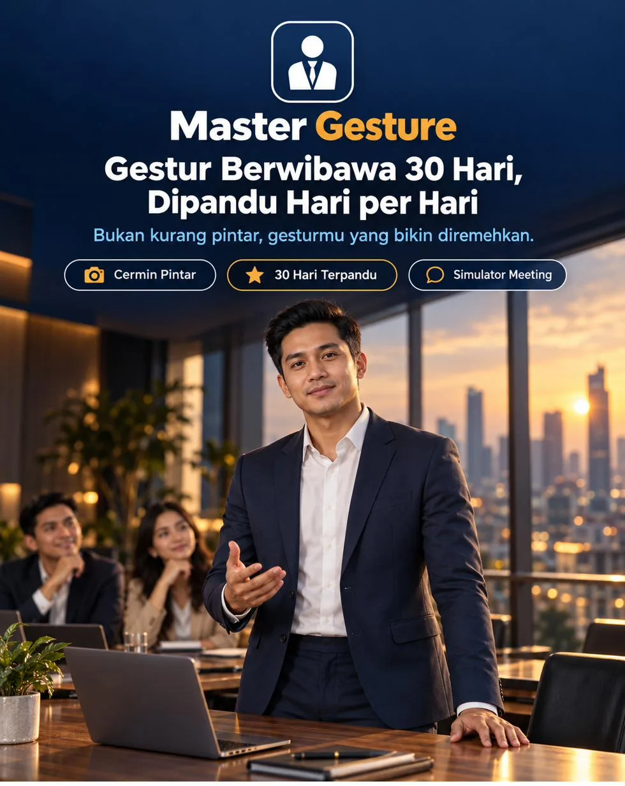
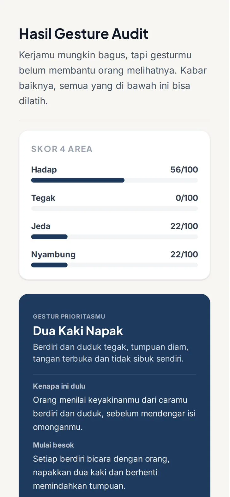
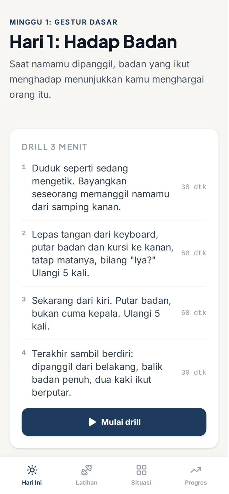
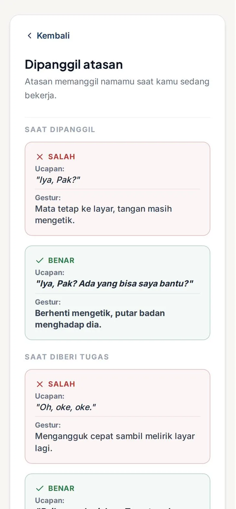
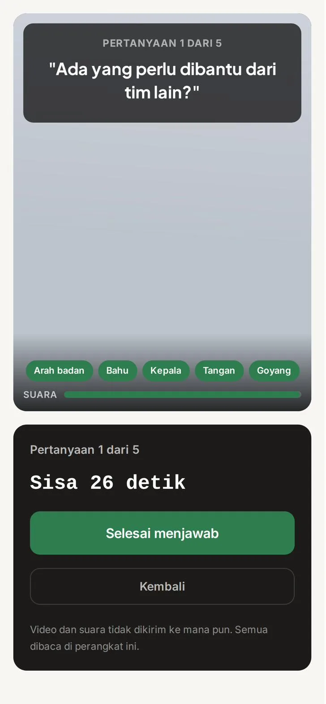
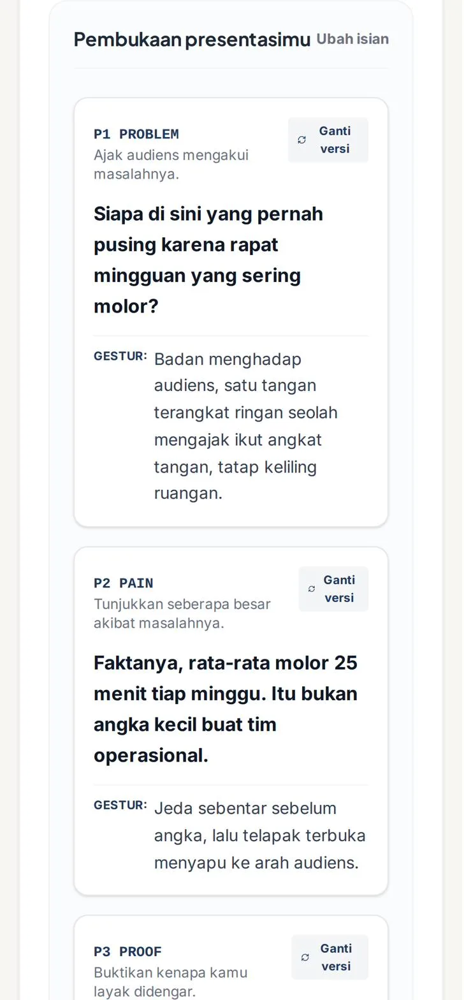
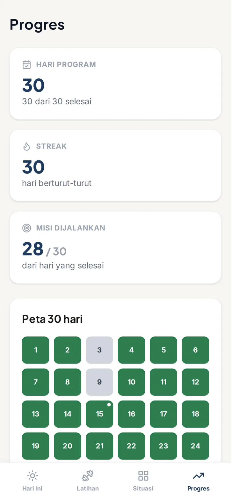
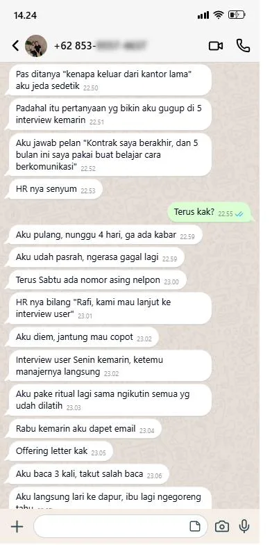
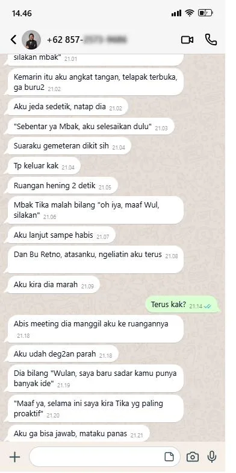
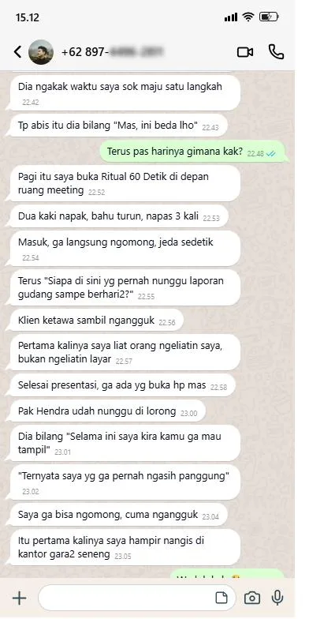

Untuk karyawan yang ingin lebih didengar di kantor

Atasan dan rekan kerja menilai kamu dari cara duduk, cara menoleh, dan cara tanganmu bergerak, sebelum mereka selesai mendengar isi omonganmu. Master Gesture adalah web app yang melatih gestur itu satu per satu. Tiap hari ada drill 3 menit, satu misi untuk dicoba di kantor, dan catatan reaksi orang yang kamu lihat sendiri.
Dibuka dari browser HP atau laptop. Tanpa install, tanpa akun.
“Iya, tadi idenya bagus.”
Atasanmu bilang begitu ke rekan sebelahmu. Padahal ide itu kamu yang lempar duluan, lima menit sebelumnya. Bedanya, dia bilang sambil duduk tegak dan menatap semua orang. Kamu bilang sambil menunduk ke laptop.
“Ke ruangan saya sebentar, ya.”
Pesan itu masuk dan jantungmu langsung turun. Di depan meja atasan, tanganmu bingung harus di mana, suaramu mengecil, dan jawaban yang sudah kamu siapkan keluar berantakan. Isinya benar, tapi kedengarannya ragu.
“Nanti kami kabari.”
Interview kerja, atau obrolan soal kenaikan gaji. Kamu sudah siapkan semuanya. Pulangnya kamu bertanya-tanya kenapa ujungnya selalu kalimat yang sama, dan kenapa orang yang jawabannya biasa saja malah lolos.
Tiga adegan ini kelihatan beda. Akarnya sama, dan bukan karena kamu kurang pintar atau kurang kerja keras.
Badan yang tidak ikut menghadap saat namamu dipanggil terbaca cuek. Tangan yang terkunci di depan dada terbaca menutup diri. Pandangan yang lari ke layar terbaca tidak yakin. Semua itu terjadi dalam hitungan detik, dan orang jarang sadar kenapa mereka menilai begitu.
Kabar baiknya, gestur itu kebiasaan. Kebiasaan bisa dilatih, satu gerakan kecil per hari, sampai jadi otomatis.
Satu gestur sehari. Dicoba langsung di kantor.
Bukan teori bahasa tubuh yang dibaca lalu dilupakan. Tiap hari kamu latih satu gestur, pakai di dunia nyata, lalu catat reaksi orang di sekitarmu.
Pertanyaan pendek tentang kebiasaanmu saat dipanggil, saat meeting, dan saat bicara dengan atasan. Hasilnya menunjukkan gestur mana yang paling perlu dibenahi duluan.

Satu rekaman pendek sebagai titik awal, diulang di Hari 15 dan Hari 30. Kamu dapat skor gestur dari sesi yang sama, jadi kemajuannya bisa dibandingkan dengan jujur. Belum siap merekam? Bisa ditunda, app mengingatkan.
Drill 3 menit dengan langkah yang jelas, satu misi lapangan untuk dicoba di kantor, dan ceklis malam untuk mencatat apakah misinya jalan dan reaksi apa yang kamu lihat.

YANG KAMU PAKAI TIAP HARI
Nyalakan kamera laptop atau HP, lalu latih gestur sambil dilihat. App memberi tanda saat tanganmu terkunci, saat badanmu tidak terlihat penuh, dan saat gesturmu sudah pas. Kamu gak perlu menebak sendiri di depan cermin.
Sebelum masuk ruang meeting atau ruangan atasan, buka satu panduan singkat. Postur, napas, dan kalimat pembuka, beres dalam semenit di depan pintu.
Rekam dirimu bicara, lalu lihat rapornya, termasuk berapa kali "eee", "jadi", dan "anu" keluar. Kebiasaan yang selama ini gak kamu sadari jadi kelihatan angkanya.
Semua gestur yang dilatih, lengkap dengan contoh salah dan benar, kapan dipakai, dan kesalahan yang paling sering terjadi. Tinggal dibuka saat butuh mengingat lagi.
UNTUK MOMEN YANG MENENTUKAN
Panduan siap pakai untuk momen yang paling bikin deg-degan: dipanggil atasan, ditanya mendadak di meeting, minta promosi atau kenaikan gaji, dan interview kerja. Isinya apa yang dilakukan badanmu dari masuk sampai keluar ruangan.
Punya momen penting minggu ini? Isi tanggal dan konteksnya, halaman Hari Ini ikut menyesuaikan latihannya.

Simulator memberi pertanyaan mendadak seperti di meeting sungguhan, dan kamu menjawab sambil merekam. Untuk presentasi atau jawaban penting, Perakit 4P menyusun skrip singkat yang runtut, lalu Gladi menampilkannya sebagai teleprompter supaya kamu bisa berlatih sampai lancar.


BUKTINYA DARI DIRIMU SENDIRI
Peta 30 hari, streak, skor gestur dari tiap latihan, dan skor sesi standar Hari 0, Hari 15, Hari 30 yang bisa dibandingkan langsung. Ada juga catatan reaksi orang yang kamu tulis tiap malam, seperti "ada yang bilang aku kelihatan lebih yakin".
Selesai 30 hari, kamu dapat Rapor Transformasi dan Level 2: Wibawa Pemimpin terbuka.

Gak ada akun dan password. Rekaman video, catatan, dan progresmu tersimpan di perangkat yang kamu pakai, tidak diunggah ke server. Pindah ke laptop atau HP lain? Pakai fitur Pindahkan Progres, cukup salin satu kode teks. Rekaman videonya tetap di perangkat lama.
menunjukkan gestur mana yang perlu dibenahi, memandu latihan 3 menit tiap hari selama 30 hari, memberi tanda lewat kamera saat gesturmu keliru, membantumu bersiap untuk momen penting, dan mencatat kemajuanmu.
kelas video, coach pribadi, atau chatbot AI yang bisa ditanya. Tidak ada orang yang menilai rekamanmu, semua penilaian dari app dan dirimu sendiri. App ini juga tidak menjanjikan promosi atau kenaikan gaji. Yang dilatih adalah cara kamu tampil, keputusan tetap di tangan orang lain.
| Buku body language | Video YouTube | Kelas public speaking | Master Gesture | |
|---|---|---|---|---|
| Yang dikerjakan | Baca, lalu coba ingat | Nonton, lalu lupa | Latihan di jadwal kelas | Drill 3 menit + misi di kantor tiap hari |
| Tahu salahnya di mana | Tidak | Tidak | Saat kelas saja | Audit dan Cermin Pintar |
| Persiapan momen penting | Teori umum | Tergantung video | Kalau pas ada sesinya | Playbook situasi dan Simulator |
| Memantau kemajuan | Tidak ada | Tidak ada | Penilaian pengajar | Skor Hari 0, 15, 30 dan catatan reaksi |
| Biaya | Beli buku | Gratis | Umumnya jutaan rupiah | Rp127.000 sekali bayar |
Geser untuk melihat cerita lainnya. Nomor disensor untuk menjaga privasi.



Kelas public speaking umumnya dibayar jutaan untuk beberapa pertemuan. Master Gesture dipakai tiap hari selama 30 hari, dan tetap bisa dibuka setelahnya untuk persiapan momen penting berikutnya.
Panduan Akses berisi kode masuk dikirim ke email yang kamu pakai saat order.
Kamu sudah coba kerja lebih keras, lembur lebih lama, dan berharap suatu hari ada yang sadar. Satu hal yang belum pernah kamu latih: cara orang melihatmu, sebelum kamu sempat bicara.
Hari pertamamu cuma 3 menit.
Dibuka dari browser HP atau laptop. Tanpa install, tanpa akun.